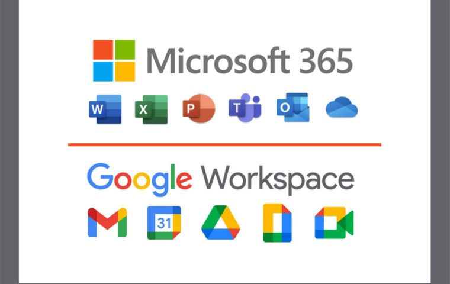

Para optimizar el rendimiento de los empleados, las herramientas de productividad como Microsoft Office 365 y Google Workspace ofrecen aplicaciones para la creación de documentos, hojas de cálculo, presentaciones, y más. Estas herramientas ayudan a mantener el trabajo organizado y bien documentado. Además, aplicaciones como Evernote permiten almacenar y organizar notas, ideas y tareas pendientes.

El E-work: nuevas formas de trabajo
4. Productividad:
Obra publicada con Licencia Creative Commons Reconocimiento Compartir igual 4.0